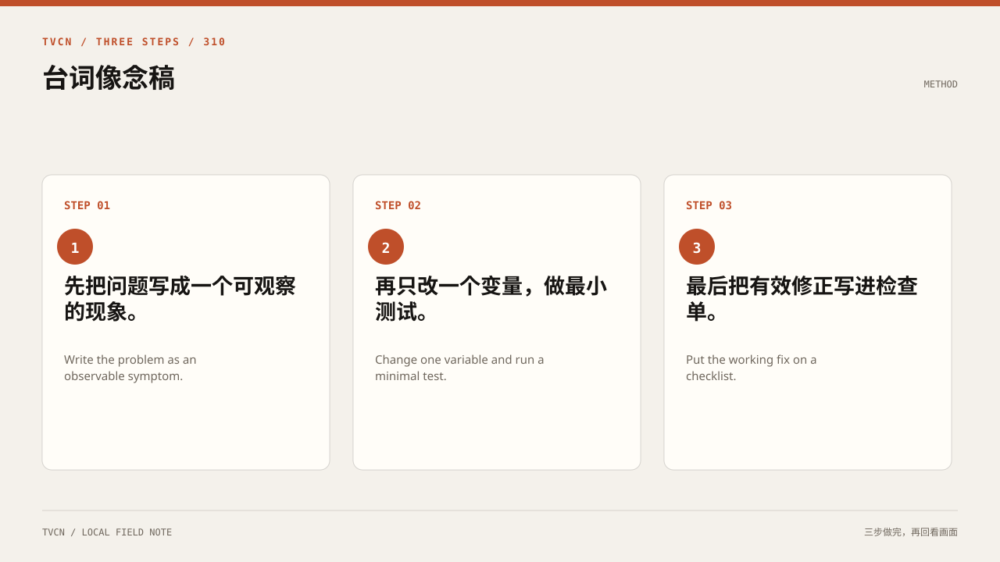

现场
删解释，加动作，让演员看着一个人说；不要加形容词。
怎么做
- 把解释性台词删掉，只留欲望和阻力。
- 给每句台词配一个动作或对象：看谁、拿什么、走到哪。
- 让演员对着一个真人说，不要对空气或镜头说。
别踩
别用提高音量或哭腔代替潜台词。
DIAGRAM / Method card
三步流程

三种原因
针对“台词像念稿”，先按三个方向排查；每次只改一个变量，改完录 30 秒对比，看变化跟着哪个环节走。
| 原因 | 现场信号 | 5 分钟验证 |
|---|---|---|
| 台词是书面语 | 句子完整、信息太满，听起来像念文章 | 改成短句和口语，允许说半句 |
| 演员不知道意图 | 每个字都对，但不知道这句话想改变对方什么 | 给一句潜台词：他想让对方留下/走/承认 |
| 没有障碍 | 对方马上同意，台词没有用力点 | 让对方拒绝、沉默或反问 |
现场诊断
- 让演员用自己的话说一遍台词，看意思是否还在。
- 问演员“这句话你想让对方做什么”，如果答不出，意图没建立。
- 把台词去掉，只演动作；如果动作成立，再把台词接回来。
修法
台词像念稿，通常不是发音问题，是台词没有任务。先让每句话想改变对方，再处理节奏和重音。
- 把长句拆成短句，删掉解释性的从句。
- 给每句台词一个动作：请求、试探、威胁、掩饰。
- 让对手戏演员给出真实阻力，不要提前接台词。
- 允许停顿和抢话；不要每句都等对方说完。
失败案例
处理“台词像念稿”时，下面三种做法会更糟；先选一个替换动作，别同时改三个变量。
| 失败做法 | 为什么会更糟 | 替换动作 |
|---|---|---|
| 加更多语气 | 每句都用力，听起来更假 | 先给意图，再决定语气 |
| 让演员“自然” | 演员不知道自然是对谁自然 | 给动作和对象 |
| 逐字改稿 | 句子顺了，意图还是空的 | 先写每句想改变什么 |
验收表
验收不是“感觉好了”，是这四项都能指认、能回放、能记录。
| 验收项 | 通过线 | 记录 |
|---|---|---|
| 口语 | 台词能一口气说顺，不像文章 | 演员复述 |
| 意图 | 每句能说出想改变对方什么 | 逐句标注 |
| 阻力 | 对手有反应，不是等着被说 | 看对手戏 |
| 停顿 | 至少有一处真实停顿或抢话 | 回放对话 |
图片说明：本页封面、图解与步骤图是编辑示意或结构图，不是本页实测照片，也不能当作器材测试证据；AI 辅助生成的图会在图注标出。判断器材或画面，以正文的测试条件与现场记录为准。